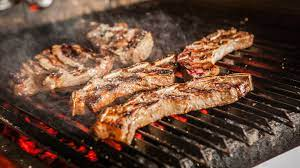

Asado

To talk about meat and Latin American recipes is to talk about Uruguay. Asados are a fundamental part of its culture. Uruguay is not only a country known for exporting the best meats, but also for being an expert in the art of preparing them.
Ingredients
- 2 LBS SKIRT STEAK
- 2 LBS SIRLOIN
- 2 LEMONS JUICE OF 2 LEMONS
- 6 CHORIZOS
- 6 MORCILLAS
Steps
- Cut the meat into thin pieces and marinate in the juice of the lemons and salt for about 20 minutes. The longer the meat marinades, the softer and juicier it will be.
- Salt the larger pieces directly on the grill.
- Place the thinner pieces, sausages, and blood sausages on the grill.
- Turn the meat until both sides are cooked.
- Remove a piece on a wooden board and cut to check for doneness on the inside.
- Let rest for a few minutes before serving.